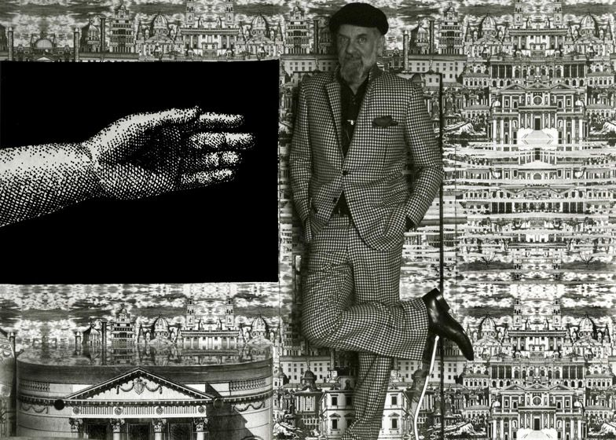
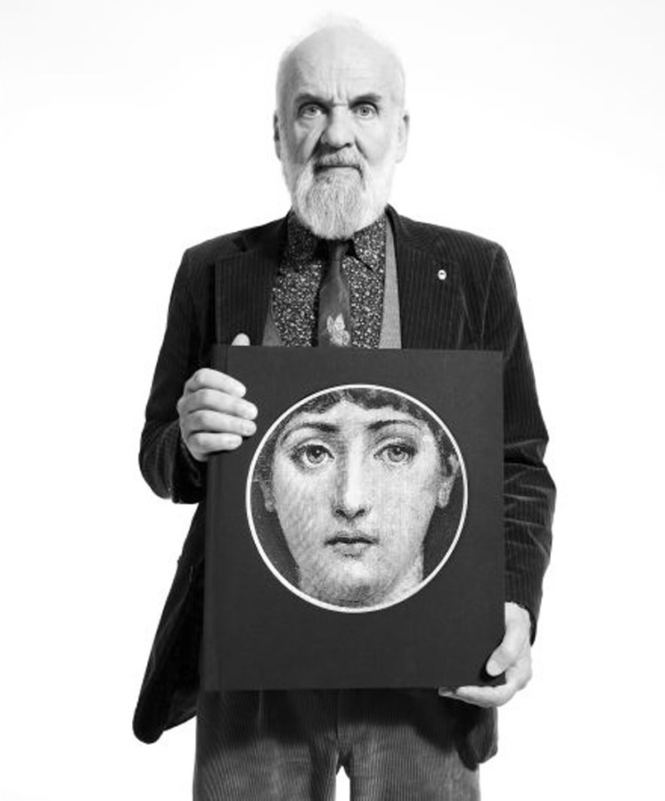
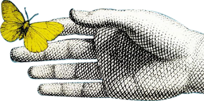
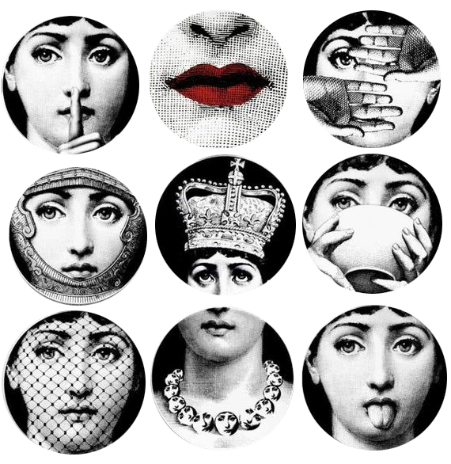
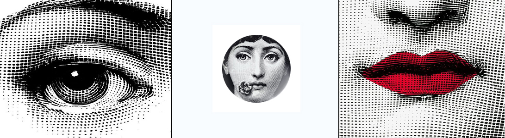
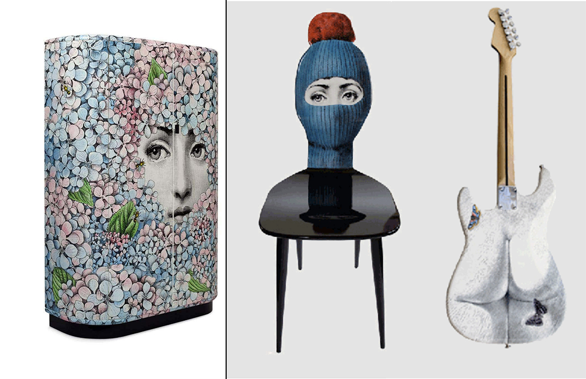
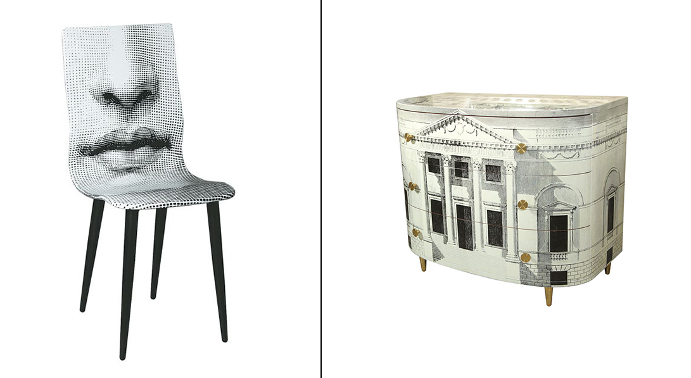
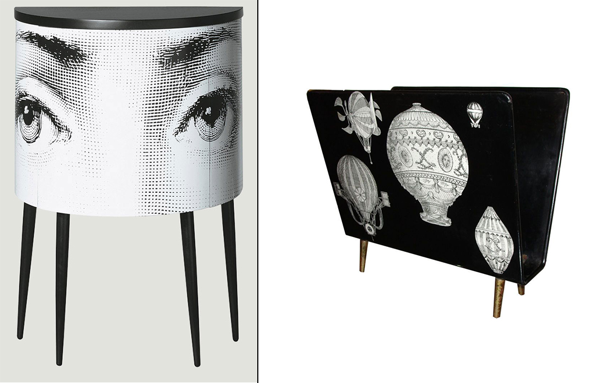

Fornasetti
과거 속에서 미래를 찾다.

뛰어난 예술성과 다재다능한 실력으로
이탈리아의 화가, 조각가 디자이너,
스타일리스트 등의 다방면으로 활동한
피에로 포르나세티에 의해 생겨난 브랜드이다.
그의 아들인 바르나바 포르나세티가 브랜드를 만들었으며
피에로 포르나세티가 구축한 전통을 잘
지키며 범위를 벗어나지 않는 선에서
새로운 시도를 하고 있다.




포르나세티는 피에로 포르나세티와 아들인 바르나바 포르나세티가 2대에
걸쳐온 디자인 기업이다. 디자인 기업으로 드물게 아티스트가 설립한 회사로
피에로 포르나세티의 작업 감성과 이탈리아의 전통, 초현실적인 표현들이 조화를 이루는 브랜드이다.
피에로 포르나세티의 작업 형태를 유지하고 고전적인 이미지를 이용하면서
대립되는 모순 속 유머를 유쾌하게 여러 방법으로 표현해냈다.

Lina Cavalieri

Lina Cavalieri, 포르나세티에서 가장 유명한 아이템이며 포르나세티하면 바로
떠오르는 여인이다.
약 350점 정도가 이 여인의 얼굴을 이용한 접시, 가구, 캔들 등 다양하게
판매되고 있다.
포르나세티의 뮤즈라고 말할 수 있으며 실제로는 오페라 가수이다.
피에로 포르나세티가 오래된 잡지를 보다가 리나 카발리에의 사진을 보곤
아름답다고 생각해 그림을 그렸다고 한다.


